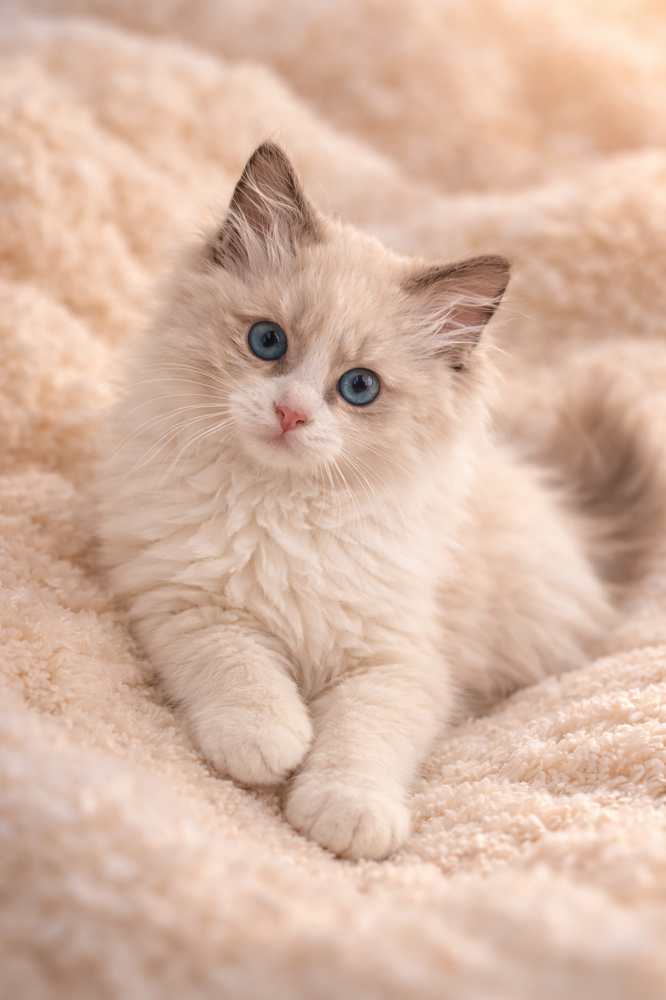

Aktualny miot
Kocięta urodzone 19.12.2025.
Są to dzieci kotki
Infinity Ragtone*PL
oraz kocura
Amor Błękitne Sny*PL.

Isabella
kotka • zarezerwowana

Inka
kotka • zarezerwowana

I'Henio
kocurek • zarezerwowany

I'Henryk
kocurek • zarezerwowany
Opieka i profilaktyka zdrowotna
Kocięta z miotu I wychowują się w domowej atmosferze i od pierwszych dni życia mają stały kontakt z człowiekiem. Dzięki temu są doskonale socjalizowane i przygotowane do życia w nowych rodzinach.
Maluszki są kilkukrotnie odrobaczone, zachipowane oraz zaszczepione szczepionką Purevax z komponentem przeciw chlamydiozie. Szczepionka ta jest ceniona za wysoką skuteczność, bezpieczeństwo oraz bardzo dobrą tolerancję u młodych kotów.
Dokumenty i wyprawka
Rodowód WCF / SKR
Książeczka zdrowia
Chip identyfikacyjny
Wyprawka dla kociaka
Galeria miotu


